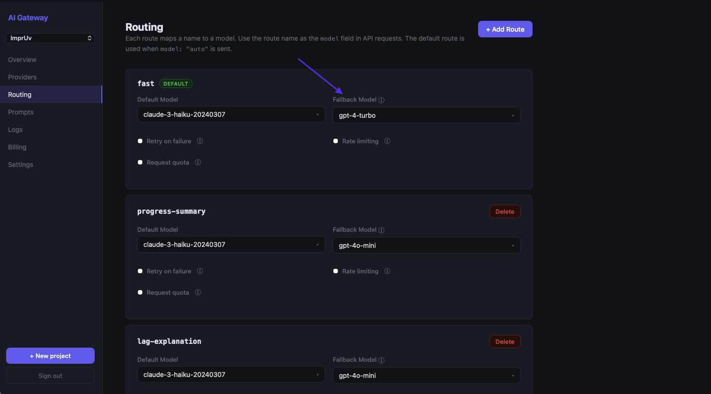

How to Add a Fallback AI Model to Your iOS or Android App in 5 Minutes
OpenAI had a multi-hour outage in November 2024. Anthropic's API saw elevated error rates for several hours in early 2025. Apps with no fallback strategy lost AI features during both events.
Adding a fallback model sounds like heavy lifting. The immediate instinct is to build it yourself: detect errors, retry with a different provider, handle different response formats, update your app code, and ship a new binary. MAIG makes it a 5-minute dashboard setup. No code change. No app update.
Here's how it works.
Why Fallback Matters for Mobile Apps
Backend services recover from provider outages by redeploying. Mobile apps can't do that.
Your iOS or Android app calls an AI provider directly. When that provider goes down, your users see errors. Two things can fix it:
- The provider recovers, or
- You release an update with a different provider and users install it
Step 2 alone can take days. Many users never update. They just stop using the feature.
A gateway with fallback routing handles provider failures transparently. Users never see an error message. The gateway detects the failure, retries against the fallback provider, and returns a successful response. The app has no idea a failover occurred.
The Architecture
MAIG uses named routes to separate your app code from specific models and providers. Instead of calling "gpt-4o" directly, your app calls a named route like "production-chat". MAIG resolves the route to the appropriate model. It falls back automatically if that model is unavailable.
[App calls route: "production-chat"]
↓
[MAIG resolves: primary = gpt-4o]
↓ (if gpt-4o fails)
[MAIG falls back: secondary = claude-3-5-sonnet]
↓
[App receives successful response — no error]
The fallback logic runs server-side. The primary provider returns a rate limit error (429), server error (500+), or times out. MAIG retries the request against the fallback provider automatically.
Step 1: Add Both Provider Keys to MAIG
Go to Provider Keys in your MAIG dashboard. Add keys for both providers:
- OpenAI:
sk-proj-... - Anthropic:
sk-ant-...
Both are encrypted server-side and never leave MAIG's servers. Your app holds a scoped MAIG project key.
Step 2: Create a Named Route With Fallback
Go to Routes → New Route in your project dashboard.
Configure these settings:
- Route name:
production-chat(or any name you'll use in your app) - Primary model:
gpt-4o - Fallback model:
claude-3-5-sonnet - Retry on: Server errors (5xx), Rate limits (429), Timeout
Save the route.

That's all the configuration needed.
Step 3: Use the Route in Your App
Update your app to call the named route instead of a specific model. The change is a one-line update.
iOS (Swift)
Before:
import AIGatewaySDK
let client = AIGatewayClient(apiKey: "maig_live_...")
let response = try await client.generateText(
prompt: userMessage,
options: GenerateOptions(model: "gpt-4o")
)
After:
import AIGatewaySDK
let client = AIGatewayClient(apiKey: "maig_live_...")
let response = try await client.generateText(
prompt: userMessage,
options: GenerateOptions(model: "production-chat") // named route — MAIG resolves to primary with automatic fallback
)
For streaming:
import AIGatewaySDK
let client = AIGatewayClient(apiKey: "maig_live_...")
let stream = client.streamText(
prompt: userMessage,
options: GenerateOptions(model: "production-chat")
)
for await chunk in stream {
responseText += chunk
}
Android (Kotlin)
Before:
import com.maig.sdk.AIGatewayClient
import com.maig.sdk.GenerateOptions
val client = AIGatewayClient(apiKey = "maig_live_...")
// suspend function — call from a coroutine scope
val response = client.generateText(
prompt = userMessage,
options = GenerateOptions(model = "gpt-4o")
)
After:
import com.maig.sdk.AIGatewayClient
import com.maig.sdk.GenerateOptions
val client = AIGatewayClient(apiKey = "maig_live_...")
// suspend function — call from a coroutine scope
val response = client.generateText(
prompt = userMessage,
options = GenerateOptions(model = "production-chat") // named route — MAIG resolves to primary with automatic fallback
)
For streaming:
import com.maig.sdk.AIGatewayClient
import com.maig.sdk.GenerateOptions
val client = AIGatewayClient(apiKey = "maig_live_...")
client.streamText(
prompt = userMessage,
options = GenerateOptions(model = "production-chat")
).collect { chunk ->
responseText += chunk
}
That's the entire code change. Ship this update once. Your fallback is in place permanently.
Changing Models Without an App Update
Named routes give you more than just fallback. You can change which model your app uses without shipping a new binary.
Say GPT-4o mini releases a significantly improved version, or Anthropic drops prices on Claude 3.5 Haiku. You want to switch all users to the better or cheaper model immediately. You don't need to wait for App Store review or users to update.
Go to your route in the MAIG dashboard, change the Primary model from gpt-4o to gpt-4o-mini, and save. Every call to "production-chat" from that moment forward uses the new model. Users on old app versions automatically benefit. They're calling the same route name, which now resolves to the new model.
That's the point of routing at the gateway layer. App code stays the same. Model decisions move to the dashboard.
Multiple Routes for Different Use Cases
You can define multiple named routes for different features in your app:
| Route Name | Primary | Fallback | Use Case |
|---|---|---|---|
chat |
gpt-4o | claude-3-5-sonnet | Conversational chat (quality-focused) |
quick-reply |
gpt-4o-mini | claude-3-5-haiku | Short suggestions (latency-focused) |
summarize |
claude-3-5-sonnet | gpt-4o | Document summarization (Claude excels here) |
classify |
gpt-4o-mini | gpt-4o | Content classification (cheap + fast) |
Your app code uses route names, never model names. When you want to adjust the model for any feature, it's a dashboard change. No code, no release.
Testing Your Fallback
Don't wait for a real outage to find out. MAIG has a way to test it first.
In the MAIG dashboard, go to your route and toggle Force Fallback to on. Now every request through that route will skip the primary model and go directly to the fallback. Make a test request from your app. You should get a successful response.
Check the Logs view. You'll see the request tagged with the fallback model, confirming the route resolved to the fallback provider.
Turn Force Fallback back off when done.
What Fallback Doesn't Cover
Fallback routing handles provider errors and rate limits. It doesn't handle these cases:
- Your MAIG account being suspended. Pay your bill.
- Invalid prompts. A 400 error from the primary will get the same 400 from the fallback.
- Content policy violations. Provider-rejected content won't succeed on fallback.
- Streaming mid-response failures. A response 50% streamed before a connection drop can't be recovered. Fallback kicks in for the next request, not the interrupted one.
For partial stream failures, handle it in your UI. Detect an abrupt stream end and offer a "Retry" option.
Summary
| Step | Time | Where |
|---|---|---|
| Add OpenAI + Anthropic keys to MAIG | 2 min | Dashboard → Provider Keys |
| Create a named route with fallback | 2 min | Dashboard → Routes → New Route |
| Update app to use route name | 1 min | One-line code change |
Five minutes, one code change, permanent fallback. Your users never see an AI outage again.
Get Started
Free tier at maig.dev. 2,500 requests/month, no credit card required. Add your provider keys, configure a route, and ship a more resilient app.